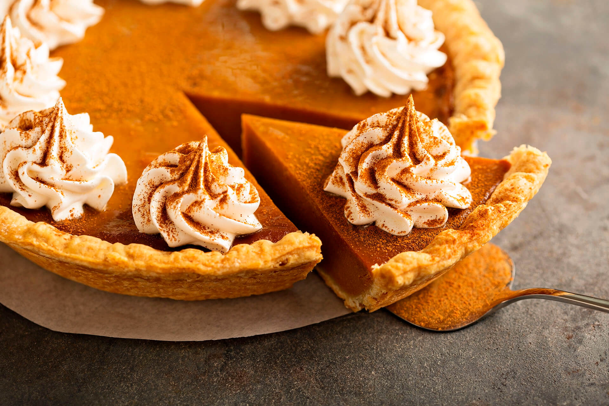

Carrot Cake
Description:
TSo carrot cake is really not a Christmas recipe, but it feels that wa.
Ingredients:
Pastry:
- 2 cups mashed, cooked pumpkin/li>
- 1 can evaporated milk
- 2 eggs, beaten
- 3/4 cup packed brown sugar
- 1/2 teaspoon ground cinnamon
- 1/2 teaspoon ground ginger
- 1/2 teaspoon ground nutmeg
- 1/2 teaspoon salt
Filling:
- 1 cup brown sugar, packed
- 2 1/2 tablespoons ground cinnamon
- 1/3 cup butter, softened
Icing:
- 1 package cream cheese, softened
- 1.4 cup butter, softened
- 1.5 cups confectioner's sugar
- 1/2 teaspoon vanilla extract
- 1/8 teaspoon salt
Steps:
- Preheat oven to 400 degrees F (200 degrees C)
- Prepare pie crust by mixing together the flour and salt.
Cut shortening into flour; add cold water 1 tablespoon at a time
(you may need only 3 tablespoons, or up to 4 tablespoons).
Mix dough and repeat until dough is moist enough to hold together.
- With lightly floured, hands shape dough into a ball. On a lightly floured
board roll dough out to about 1/8 inch thickness. With a sharp knife,
cut dough 1 1/2 inch larger than the upside-down 8- to 9-inch pie pan.
Gently roll the dough around the rolling pin and transfer it right-side up
onto the pie pan. Unroll, easing dough into the bottom of the pie pan.
- In a large bowl, beat pumpkin with evaporated milk, eggs, brown sugar, cinnamon,
ginger, nutmeg and salt with an electric mixer or immersion blender. Mix well.
Pour into a prepared crust. Bake 40 minutes or until when a knife is inserted 1
inch from the edge comes out clean.